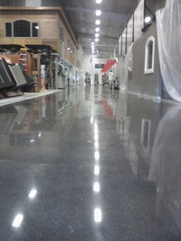

{kind=link}
{kind=link}
{kind=link}
{kind=link}
Welcome to InVision Flooring Systems
InVision Flooring Systems is a full-service provider of concrete floor finishes for new construction and renovation for a variety of businesses including: supermarket and grocery chains, retail, automotive sales and service, industrial, data centers, health care, pharmaceutical, and education. Our experienced professionals are experts in diamond polishing, as well as epoxy and acrylic coatings. Our pre-finishing services include demolition of existing floors for refurbishing, as well as supervise and/or subcontract concrete pours for new construction.
{kind=link}
Benefits:
Lower Application Cost: The application cost of polished floors per square foot is lower than many traditional floor covering products.
Ease of Maintenance: The diamond polishing process produces a dense, abrasion resistant surface that, if properly maintained, will last a lifetime. Simple cleaning is the only maintenance requirement for a long-lasting polished floor. When maintained properly, the polished floor never needs harsh chemicals to clean or strip surfaces.
Cost Effective: Because of its ease of maintenance, polished floors outperform all other concrete floor finishes in return on investment, resulting in lower maintenance costs than other types of floor surfacing.
Durability: Polished floors have a higher resistance to stains and wear caused by heavy traffic, chemicals, machinery, etc.
Slip Resistance: Polished floors deliver the glossy look of a wet floor, without the slipperiness.
Endless Design Options: Colors and engraving are just the beginning. Customers can add colored aggregates or materials such as glass, bolts, nails, or computer chips to the concrete mixture. These materials are then revealed in the polishing process to bring forth a one-of-a-kind floor that looks like a work of art.
Sustainable: Polished concrete does not require the use of hazardous chemicals, coatings, adhesives, or cleaners. Polished floors may also help achieve LEED points and can result in saving on lighting costs, due to the added reflectivity of the floor.
Affordable for a Lifetime: Although the final cost depends on the level of finish, design options, and the complexity of the project; polished concrete offers the customer the upscale look and mirror-like finish of marble or granite, without the high cost of materials, installation, and ongoing maintenance.
Contact us today and let InVision Flooring Systems transform your concrete floor into a beautiful, marble-like, abrasion resistant, water repellant, dustproof surface, which is easy and economical to maintain.
 InVision Flooring Systems is a proud member of the ABC Kentuckiana chapter.
InVision Flooring Systems is a proud member of the ABC Kentuckiana chapter.
InVision Flooring Systems
CALL: 502-408-5786
A Minority-Owned Business
Home | Polished Concrete | Surface Prep | Epoxy Coatings | Gallery | Contact
Copyright 2013 InVision Flooring Systems | Website designed by Traffic Pros Interactive